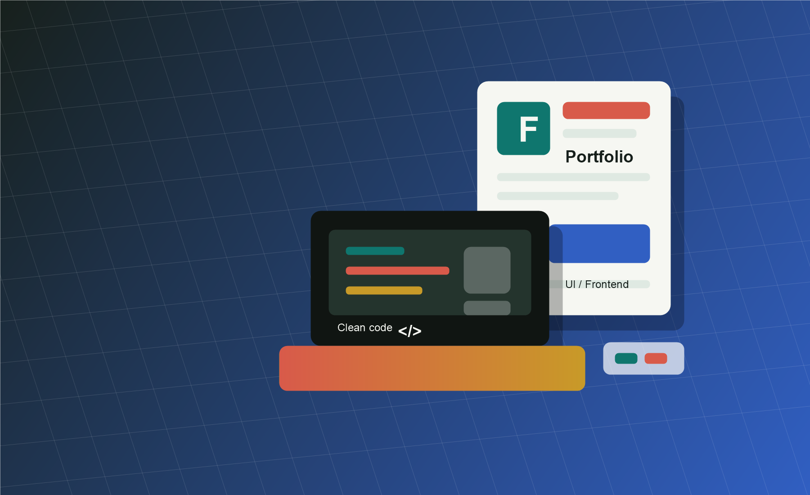

Medical website
Sampi Medline Project
Klinik xizmatlar, ishonchli ko'rinish va foydalanuvchi uchun qulay navigatsiyaga ega tibbiyot yo'nalishidagi loyiha.
sampi-medline.uz
Frontend developer
Biznes uchun tez yuklanadigan, mobilga mos va ishonchli web-saytlar yarataman. Har bir loyihada qulay interfeys, toza kod va natija beradigan yechimga e'tibor qilaman.
Men haqimda
Men biznes maqsadini tushunib, foydalanuvchi uchun sodda va yoqimli interfeyslar qurishga qiziqaman. Landing page, portfolio, dashboard va kichik web ilovalar uchun puxta tuzilgan frontend yechimlar tayyorlayman.
Telefon, planshet va desktopda tartibli ko'rinadigan sahifalar.
HTML, CSS va JavaScript bilan tez yuklanadigan interfeyslar.
Dizayn faqat chiroyli emas, foydalanuvchi vazifasini ham yengillashtiradi.
Tanlangan ishlar
Medical website
Klinik xizmatlar, ishonchli ko'rinish va foydalanuvchi uchun qulay navigatsiyaga ega tibbiyot yo'nalishidagi loyiha.
sampi-medline.uzService website
Xizmat haqida ma'lumot, buyurtma uchun tezkor yo'l va mobil ko'rinishga moslangan gilam yuvish sayti.
gilam-yuvish.vercel.appPortfolio
Mutaxassislik, real loyihalar va kontaktlarni bitta ixcham, animatsiyali sahifada ko'rsatadigan shaxsiy portfolio.
Aloqaga chiqishTexnologiyalar
Aloqa
Portfolio, landing page yoki web ilova kerak bo'lsa, qisqa xabar qoldiring. Men vazifani aniqlab, eng sodda va samarali yechimni taklif qilaman.